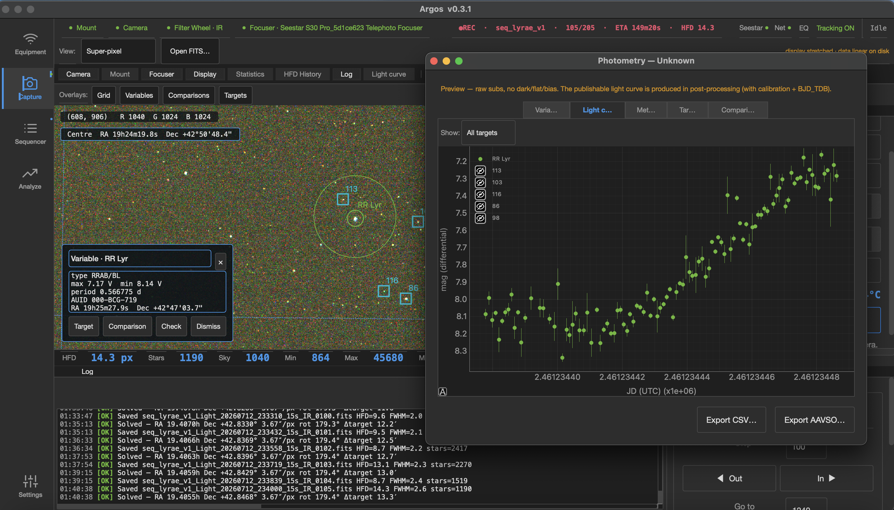
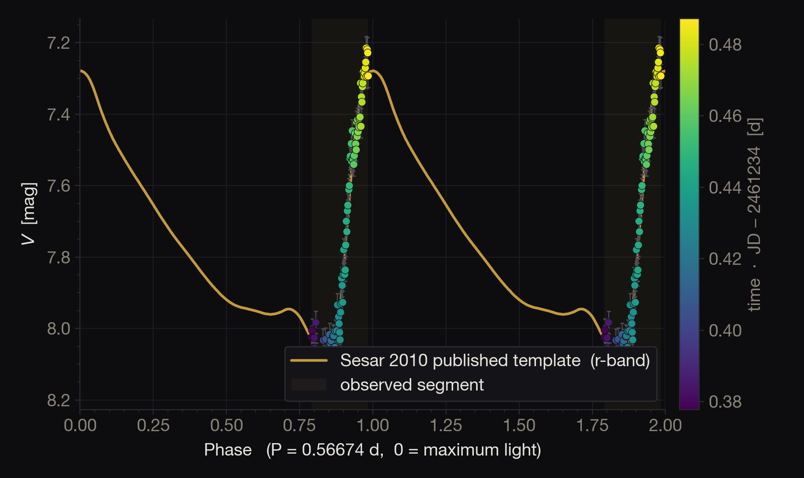

01
Capture
Point, track and shoot — live view, sequences and full telescope control, from your laptop.
the hundred-eyed watcher
Desktop astrophotography & differential photometry
for the ZWO Seestar S30 Pro.
The Seestar shows you the sky.
Argos measures it.
The S30 Pro is a formidable little sky-explorer, and its app is a pleasure to use — but it’s built for looking, not for measuring. The FITS it saves are missing the metadata that real science needs. Argos picks up from there and turns this remarkable telescope into a scientific instrument: complete science headers, every star measured, astrometry on each frame, and differential light curves — on your laptop, as the light lands.
Argos Panoptes, the giant of a hundred eyes, was set to watch and never sleep — a fitting name for software that keeps watch over the sky.
Live differential photometry of RR Lyrae — the light curve building frame by frame, as the subs land.

One signal path, from raw photons to a calibrated light curve — every stage running on your laptop, frame by frame.
Point, track and shoot — live view, sequences and full telescope control, from your laptop.
Every frame saved as a proper science file, with the details the Seestar leaves out — ready for Siril or PixInsight.
Each frame is matched to the sky, so every pixel knows exactly where it points.
Each star measured and calibrated against reference stars from the AAVSO catalog.
Brightness over time, building live as the light lands — and exported when you’re done.
Argos stops where honesty ends — real subs, real headers, a live quick-look. For the publishable curve, its frames drop straight into Siril.

star_var_script — phase-folded at P = 0.5667 d and laid over the published Sesar 2010 template. The observed segment falls right on the model.Alpha v0.4.0 is out. Run it on your Seestar — or against the ASCOM Alpaca simulator, no telescope needed.
brew install uv
git clone https://github.com/jperret21/argos.git
cd argos
uv sync --extra dev# power on the Seestar, join its Wi-Fi
uv run python main.py
# Connection → host <seestar-ip>, port 32323# ASCOM Alpaca simulator (OmniSim) in Docker
docker run -d --name omnisim \
-p 32323:32323 -p 32227:32227/udp omnisim
uv run python main.py
# Connection → host localhost, port 32323Argos is open source and built in the open.
Issues, ideas, and pull requests are all welcome — especially from Seestar owners who want to push their data further. The codebase is uv-managed, fully typed, and covered by tests.
# fork & clone, then:
uv sync --extra dev
uv run --extra dev pytest